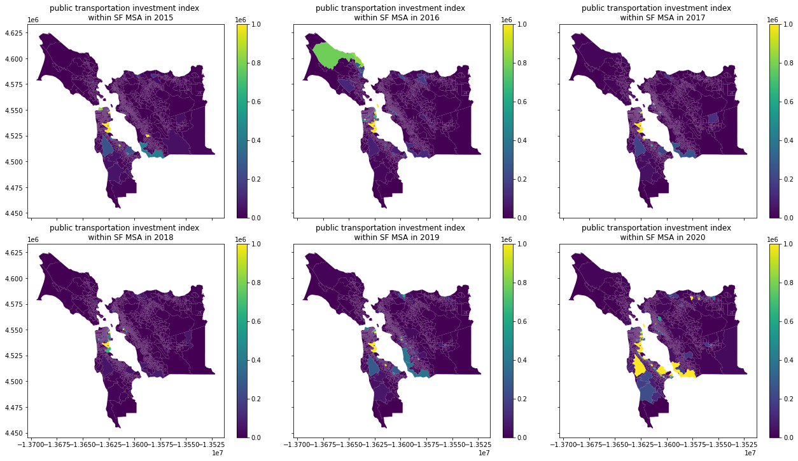
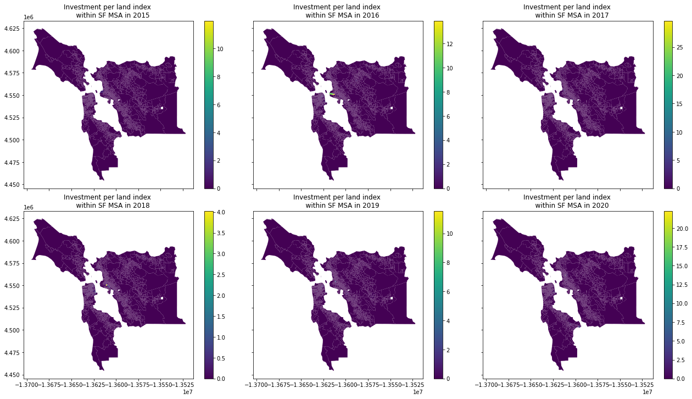
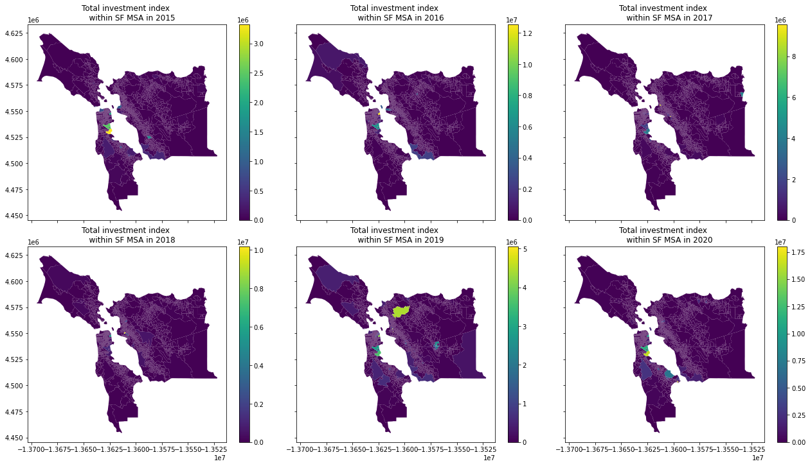

PART 3: Investment Index and Visualization
Contents
PART 3: Investment Index and Visualization¶
Haoyu Yue, Department of Urban Design and Planning, University of Washington
Preparation¶
import numpy as np
import matplotlib.pyplot as plt
import pandas as pd
import geopandas as gpd
from shapely.geometry import Point, Polygon
import itertools
import contextily as ctx
from matplotlib_scalebar.scalebar import ScaleBar
#%matplotlib widget
%matplotlib inline
pd.set_option('display.max_columns', None)
Import datastes¶
#census block group
ca_bg = gpd.read_file('data/tl_2015_06_bg/tl_2015_06_bg.shp')
ca_bg = ca_bg.to_crs('EPSG:3857')
#administration boundairs
sf_boundary = gpd.read_file('data/sf_boundaries.gpkg')
sf_boundary = sf_boundary.to_crs('EPSG:3857')
sf_invest_line = gpd.read_file('data/invest_index/geo_bg_invest_line.geojson')
sf_invest_point = gpd.read_file('data/invest_index/geo_bg_invest_point.geojson')
sf_invest_polygon_builing = pd.read_csv('data/invest_index/polygon/building.csv')
sf_invest_polygon_other = pd.read_csv('data/invest_index/polygon/except_car&buildings.csv')
sf_invest_polygon_vehicle2015 = pd.read_csv('data/invest_index/polygon/vehicle2015.csv')
sf_invest_polygon_vehicle2016 = pd.read_csv('data/invest_index/polygon/vehicle2016.csv')
sf_invest_polygon_vehicle2017 = pd.read_csv('data/invest_index/polygon/vehicle2017.csv')
sf_invest_polygon_vehicle2018 = pd.read_csv('data/invest_index/polygon/vehicle2018.csv')
sf_invest_polygon_vehicle2019 = pd.read_csv('data/invest_index/polygon/vehicle2019.csv')
sf_invest_polygon_vehicle2020 = pd.read_csv('data/invest_index/polygon/vehicle2020.csv')
Variables¶
invest_types = ['research and planning', 'fire prevention', 'climate action',
'public transportation', 'housing', 'green space', 'others', 'vehicle',
'building', 'utilities', 'agriculture', 'clean air']
#define variables
YEARS = ['2015','2016','2017','2018','2019','2020']
Investment Index¶
#sum all shapes of investments (points, lines, polygons)
total_invest = sf_invest_point.loc[:,invest_types] + sf_invest_line.loc[:,invest_types] + sf_invest_polygon_builing.loc[:,invest_types] + sf_invest_polygon_other.loc[:,invest_types] + sf_invest_polygon_vehicle2015.loc[:,invest_types] + sf_invest_polygon_vehicle2016.loc[:,invest_types]+ sf_invest_polygon_vehicle2017.loc[:,invest_types]+ sf_invest_polygon_vehicle2018.loc[:,invest_types]+ sf_invest_polygon_vehicle2019.loc[:,invest_types]+ sf_invest_polygon_vehicle2020.loc[:,invest_types]
sf_invest = sf_invest_point.loc[:,['GEOID', 'TotalPopu', 'area', 'year', 'geometry']].merge(total_invest,left_index=True,right_index=True)
sf_invest_inflation = sf_invest.copy()
sf_invest_inflation = sf_invest_inflation[['year','research and planning', 'fire prevention', 'climate action',
'public transportation', 'housing', 'green space', 'others', 'vehicle',
'building', 'utilities', 'agriculture', 'clean air']]
#inflation
sf_invest_inflation.loc[sf_invest_inflation.year=='2015',invest_types] = sf_invest_inflation.loc[sf_invest_inflation.year=='2015',invest_types] * 1.08
sf_invest_inflation.loc[sf_invest_inflation.year=='2016',invest_types] = sf_invest_inflation.loc[sf_invest_inflation.year=='2016',invest_types] * 1.07
sf_invest_inflation.loc[sf_invest_inflation.year=='2017',invest_types] = sf_invest_inflation.loc[sf_invest_inflation.year=='2017',invest_types] * 1.05
sf_invest_inflation.loc[sf_invest_inflation.year=='2018',invest_types] = sf_invest_inflation.loc[sf_invest_inflation.year=='2018',invest_types] * 1.02
sf_invest_inflation.loc[sf_invest_inflation.year=='2019',invest_types] = sf_invest_inflation.loc[sf_invest_inflation.year=='2019',invest_types] * 1.01
sf_invest = sf_invest_point.loc[:,['GEOID', 'TotalPopu', 'area', 'year', 'geometry']].merge(sf_invest_inflation[invest_types],left_index=True,right_index=True)
sf_invest['Total Invest'] = np.nan
sf_invest['Invest per popu'] = np.nan
sf_invest['Invest per land'] = np.nan
sf_invest['Invest per land per popu'] = np.nan
sf_invest['Total Invest'] = sf_invest.loc[:,invest_types].sum(axis=1)
sf_invest['Invest per land'] = 1000 * 1000 * sf_invest['Total Invest']/sf_invest['area']
sf_invest['Invest per popu'] = sf_invest['Total Invest']/(sf_invest['TotalPopu']/1000) #/1000people
sf_invest['Invest per land per popu'] = 1000 * (sf_invest['Total Invest']/sf_invest['area'])/sf_invest['TotalPopu'] #/km2 /1000people
sf_invest.to_file('data/regression/sf_invest.geojson', driver='GeoJSON')
Descriptive Statistics¶
sf_invest_all_years = sf_invest.groupby(['GEOID'])[sf_invest.columns].sum()
pd.DataFrame(sf_invest_all_years.sum()).to_clipboard()
Visualization¶
Trends¶
year_type = sf_invest.groupby('year')[invest_types].sum()
f,ax = plt.subplots(figsize=(15,6))
(year_type/1000000).plot(marker='.',ax=ax,linewidth=0.9)
ax.grid(True,linestyle='--')
plt.ylim((0))
plt.xlabel('Years',size=16)
plt.ylabel('Investment Amounts (Million Dollars in 2020)',size=16)
ax.legend(loc = 'upper right',fontsize=12)
<matplotlib.legend.Legend at 0x7fda2f2bb7f0>
All types across years¶
f,axs = plt.subplots(12,6,figsize=(30,48),sharex=True,sharey=True)
for ax,yt in zip(axs.flat,itertools.product(invest_types,YEARS)):
sf_invest[sf_invest.year==yt[1]].plot(ax=ax,column=yt[0],legend=True)
ax.set_title(f'''{yt[0]} investment index
within SF MSA in {yt[1]}''')
plt.tight_layout()
plt.show()

f,axs = plt.subplots(2,3,figsize=(18,10),sharex=True,sharey=True,subplot_kw=dict(aspect='equal'))
for ax,yt in zip(axs.flat,itertools.product(['public transportation'],YEARS)):
sf_invest[sf_invest.year==yt[1]].plot(ax=ax,column=yt[0],legend=True,vmax = 1e6)
ax.set_title(f'''{yt[0]} investment index
within SF MSA in {yt[1]}''')
plt.tight_layout()
plt.show()

#Investment Index per land
f,axs = plt.subplots(2,3,figsize=(18,10),sharex=True,sharey=True)
for ax,y in zip(axs.flat,YEARS):
sf_invest[sf_invest.year==y].plot(ax=ax,column='Invest per land per popu',legend=True)
ax.set_title(f'''Investment per land index
within SF MSA in {y}''')
plt.tight_layout()
plt.show()

f,axs = plt.subplots(2,3,figsize=(18,10),sharex=True,sharey=True)
for ax,y in zip(axs.flat,YEARS):
sf_invest[sf_invest.year==y].plot(ax=ax,column='Invest per land',legend=True,vmax=0.1 * sf_invest[sf_invest.year==y]['Invest per land'].max())
ax.set_title(f'''Investment per land index
within SF MSA in {y}''')
plt.tight_layout()
plt.show()

#Total Investment
f,axs = plt.subplots(2,3,figsize=(18,10),sharex=True,sharey=True)
for ax,y in zip(axs.flat,YEARS):
sf_invest[sf_invest.year==y].plot(ax=ax,column='Total Invest',legend=True)
ax.set_title(f'''Total investment index
within SF MSA in {y}''')
plt.tight_layout()
plt.show()

Three Total Index¶
all_year_type = sf_invest.groupby('GEOID')[['Invest per land per popu']].sum()
a = np.log(all_year_type['Invest per land per popu']).sort_values()
/Users/haoyu/opt/anaconda3/lib/python3.9/site-packages/pandas/core/arraylike.py:397: RuntimeWarning: divide by zero encountered in log
result = getattr(ufunc, method)(*inputs, **kwargs)
sf_invest_all_year_type = sf_invest.iloc[0:2920].loc[:,['GEOID', 'TotalPopu', 'area', 'geometry']].merge(all_year_type,left_on='GEOID',right_index=True)
f, ax = plt.subplots(figsize=(9,12))
sf_invest_all_year_type.plot(column = 'Invest per land per popu',vmax=1,legend=True,ax=ax,colormap='magma',legend_kwds={'label': "Dollars in 2020/Per Sq Meter/Per Per 1000 Residents",'orientation': "horizontal"})
#ca_bg.plot(ax=ax,bounday=sf_invest_all_year_type.boundary)
ctx.add_basemap(ax=ax, crs=sf_invest_all_year_type.crs, source=ctx.providers.Stamen.TonerLite)
sf_boundary.plot(ax=ax,linewidth=0.5,edgecolor="black",facecolor='none')
#ax.set_title('The Map of Study Area',size=18)
ax.add_artist(ScaleBar(2.0,box_alpha=0,border_pad=1))
plt.axis('off')
plt.tight_layout()
/Users/haoyu/opt/anaconda3/lib/python3.9/site-packages/geopandas/plotting.py:630: FutureWarning: 'colormap' is deprecated, please use 'cmap' instead (for consistency with matplotlib)
warnings.warn(
sf_all_invest = sf_invest[['GEOID','geometry']].merge(sf_invest.groupby('GEOID')[['Total Invest','Invest per land','Invest per popu']].sum(),left_on='GEOID',right_index=True,how='right').drop_duplicates()
f, ax = plt.subplots(figsize=(9,12))
sf_all_invest.plot(column = 'Total Invest',vmax=1e6,legend=True,ax=ax,colormap='viridis',legend_kwds={'label': "Dollars in 2020",'orientation': "horizontal"})
#ca_bg.plot(ax=ax,bounday=sf_invest_all_year_type.boundary)
ctx.add_basemap(ax=ax, crs=sf_invest_all_year_type.crs, source=ctx.providers.Stamen.TonerLite)
sf_boundary.plot(ax=ax,linewidth=0.5,edgecolor="black",facecolor='none')
#ax.set_title('The Map of Study Area',size=18)
ax.add_artist(ScaleBar(2.0,box_alpha=0,border_pad=1))
plt.axis('off')
plt.tight_layout()
/Users/haoyu/opt/anaconda3/lib/python3.9/site-packages/geopandas/plotting.py:630: FutureWarning: 'colormap' is deprecated, please use 'cmap' instead (for consistency with matplotlib)
warnings.warn(
f, ax = plt.subplots(figsize=(9,12))
sf_all_invest.plot(column = 'Invest per land',vmax=1e6,legend=True,ax=ax,colormap='magma',legend_kwds={'label': "Dollars in 2020/Per Sq Meter",'orientation': "horizontal"})
#ca_bg.plot(ax=ax,bounday=sf_invest_all_year_type.boundary)
ctx.add_basemap(ax=ax, crs=sf_invest_all_year_type.crs, source=ctx.providers.Stamen.TonerLite)
sf_boundary.plot(ax=ax,linewidth=0.5,edgecolor="black",facecolor='none')
#ax.set_title('The Map of Study Area',size=18)
ax.add_artist(ScaleBar(2.0,box_alpha=0,border_pad=1))
plt.axis('off')
plt.tight_layout()
/Users/haoyu/opt/anaconda3/lib/python3.9/site-packages/geopandas/plotting.py:630: FutureWarning: 'colormap' is deprecated, please use 'cmap' instead (for consistency with matplotlib)
warnings.warn(
f, ax = plt.subplots(figsize=(9,12))
sf_all_invest.plot(column = 'Invest per popu',vmax=1e6,legend=True,ax=ax,colormap='magma',legend_kwds={'label': "Dollars in 2020/Per 1000 Residents",'orientation': "horizontal"})
#ca_bg.plot(ax=ax,bounday=sf_invest_all_year_type.boundary)
ctx.add_basemap(ax=ax, crs=sf_invest_all_year_type.crs, source=ctx.providers.Stamen.TonerLite)
sf_boundary.plot(ax=ax,linewidth=0.5,edgecolor="black",facecolor='none')
#ax.set_title('The Map of Study Area',size=18)
ax.add_artist(ScaleBar(2.0,box_alpha=0,border_pad=1))
plt.axis('off')
plt.tight_layout()
/Users/haoyu/opt/anaconda3/lib/python3.9/site-packages/geopandas/plotting.py:630: FutureWarning: 'colormap' is deprecated, please use 'cmap' instead (for consistency with matplotlib)
warnings.warn(